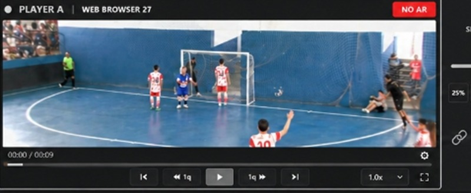
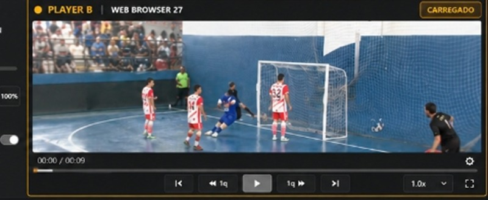

0-10-20-30-40-50-60
TRANSIÇÃO
DSK / GRAFISMOS
NO AR
0-10-20-30-40-50-60
Fontes
Mixer de Áudio
Mixer de Áudio
Barramentos, ganho de entrada e roteamento ao vivo — 48 kHz / 24 bits
SSD GRAVANDO
00:24:18
Disco: 512 GB · 327 GB livre (64%)
Câmeras:
CAM 1 Principal
CAM 2 Lateral Dir
CAM 3 Atrás Gol
CAM 4 Lateral Esq
Capturas:

00:00 / 00:09
SLOW-MOTION
50%

00:00 / 00:09
LANCES SALVOS (eventos de replay)
4 lances · 00:31 total| # | TIPO | TEMPO | DURAÇÃO | ÂNGULOS | AÇÕES |
|---|
HISTÓRICO — 4 CÂMERAS SINCRONIZADAS
19:28:15:12
00:00IN19:28:15:12OUT00:09
3Mix/Configurações